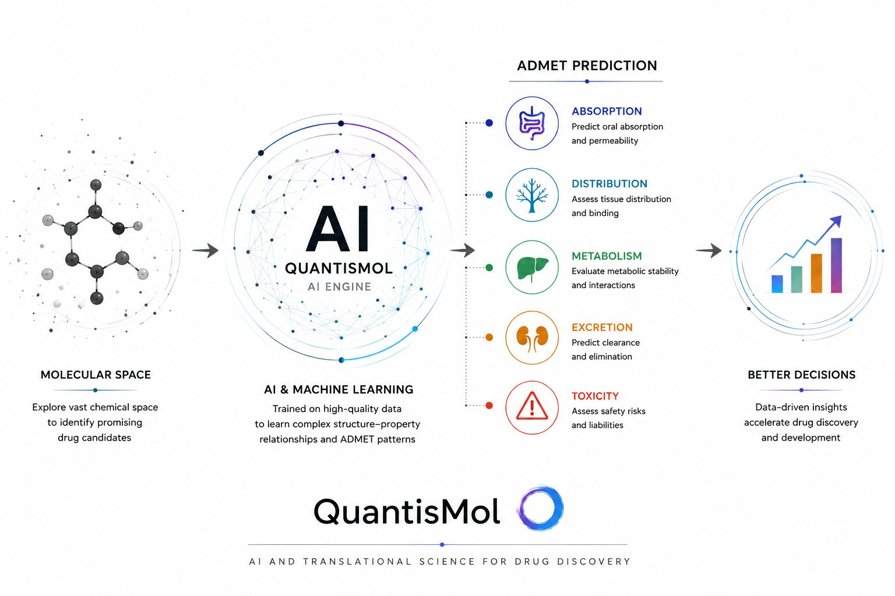

QuantisMol builds AI-powered tools that help drug discovery teams predict molecular behavior, flag development risks, and prioritize compounds with greater confidence.
Explore the platform
From chemical space exploration through AI-driven prediction across all five ADMET dimensions to actionable development insights.
Predict absorption, distribution, metabolism, excretion, and toxicity profiles for candidate compounds using models trained on curated pharmacokinetic datasets.
Predictive ModelsRank and filter molecular libraries against multi-objective criteria — balancing potency, selectivity, and developability to surface the most promising leads.
Decision SupportBridge computational predictions with experimental strategy. Identify liabilities that matter for IND-enabling studies before committing to costly in vivo work.
Translational ScienceOur research program prioritizes practical utility over novelty. Every model is evaluated against real-world drug discovery scenarios, not just leaderboard metrics.
Preprints, datasets, and open-source tools will be released as the platform matures.
View on GitHubIndustry scientist with over eight years of experience spanning DMPK, ADME, translational science, bioanalysis, and oligonucleotide therapeutics. Chemistry Ph.D. with a growing focus on computational drug discovery and ADMET prediction.
Contributed to drug development programs at organizations including Eli Lilly and AstraZeneca, with experience across experimental development, translational decision-making, external partnerships, and IND-enabling programs.
Whether you're exploring ADMET tools for your pipeline, interested in early access, or looking to collaborate on research — reach out.